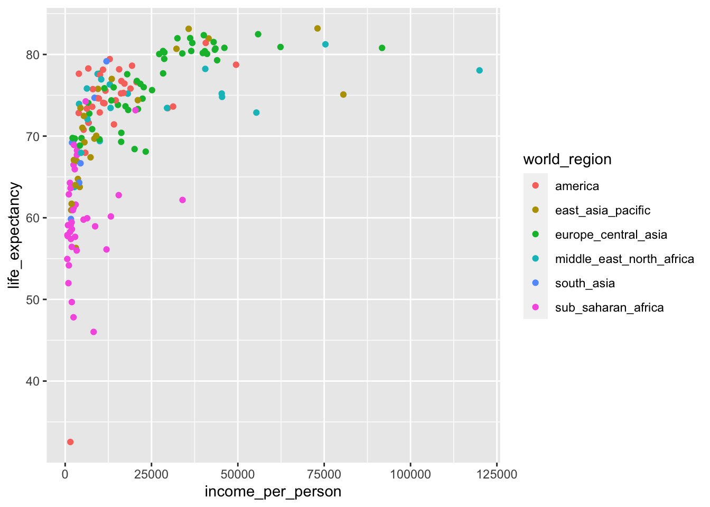

Correlations
Libraries and functions
Finding correlations
When we set off to gather or explore data, we generally have a research question that we’re interested in. We then design an experiment to test this question - in that case our data helps us to find an answer.
Quite often we gather a lot more data than we directly need to answer our research question. As such, it’s often very useful to explore our data and look for patterns or correlations.
Loading data
The first step to exploring our data is of course loading it in the first place.
gapminder <- read_csv("data/gapminder_clean.csv")The gapminder data set that we’ve loaded has 13 different variables, with observations for over 150 different countries in the year 2010.
Comparing variables
To illustrate how we can use compare variables, we’re going to focus on life_expectancy in different contexts.
Let’s start off with a simple scatter plot that looks at life_expectancy against income_per_person:
ggplot(data = gapminder,
aes(x = income_per_person,
y = life_expectancy)) +
geom_point()
It seems that as the income per person increases, so does the life expectancy. We can also see that the life expectancy kind of plateaus - which is not very surprising, since it can’t go on indefinitely!
Looking at this plot, it’s quite striking how there is quite a range of life expectancy values at the really low income countries. We know that there is information on different world regions in the data (world_region). Perhaps there are certain world regions that have particularly low income levels?
This is something we can easily check.
We simply adjust the previous plot by colouring our data by world_region:
ggplot(data = gapminder,
aes(x = income_per_person,
y = life_expectancy,
colour = world_region)) +
geom_point()
Looking at this plot it appears that most of the low-income countries are in sub-Saharan Africa.
We could explore this even further by, for example, adding information on the population size to the plot:
We can adjust the previous plot by adding size to our plot, based on population:
ggplot(data = gapminder,
aes(x = income_per_person,
y = life_expectancy,
colour = world_region,
size = population)) +
geom_point()
It’s easy to add too much information to a single plot. In the example above, we’re actually plotting four different variables in a single plot:
-
income_per_personon the x-axis -
life_expectancyon the y-axis -
world_regionas colour -
populationas size
Whether this helps convey whatever message you have is not exactly clear. We’ll talk more about the purpose of a plot and the audience in the next section.
Exercises
Level:
Plot life expectancy vs income per person for the main religions.
Can you see any trends?
ggplot(data = gapminder,
aes(x = income_per_person,
y = life_expectancy,
colour = main_religion)) +
geom_point()
There are no clear trends in these data, apart from that the data are very spread out!
What we can see in the plot is that the country with the highest income per person is a Muslim country, and the second-highest income country is Christian.
Level:
Try the following:
- Find the 5 highest income countries
- Find the 5 lowest income countries
- Create a box plot with those data points
Hint: it might be easiest to save the results in two separate objects.
First, we get the 5 highest income countries:
Next, we get the 5 lowest income countries:
Lastly, we can plot this as follows:
ggplot(data = top5_income,
aes(x = "top 5", y = income_per_person)) +
geom_boxplot() +
# create new box using the bottom 5 data
geom_boxplot(data = bottom5_income,
aes(x = "bottom 5", y = income_per_person))